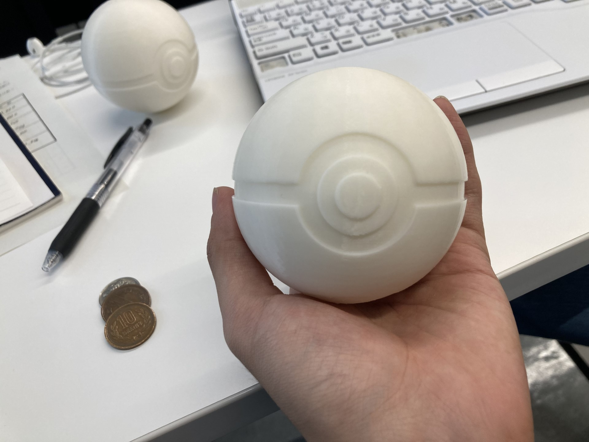
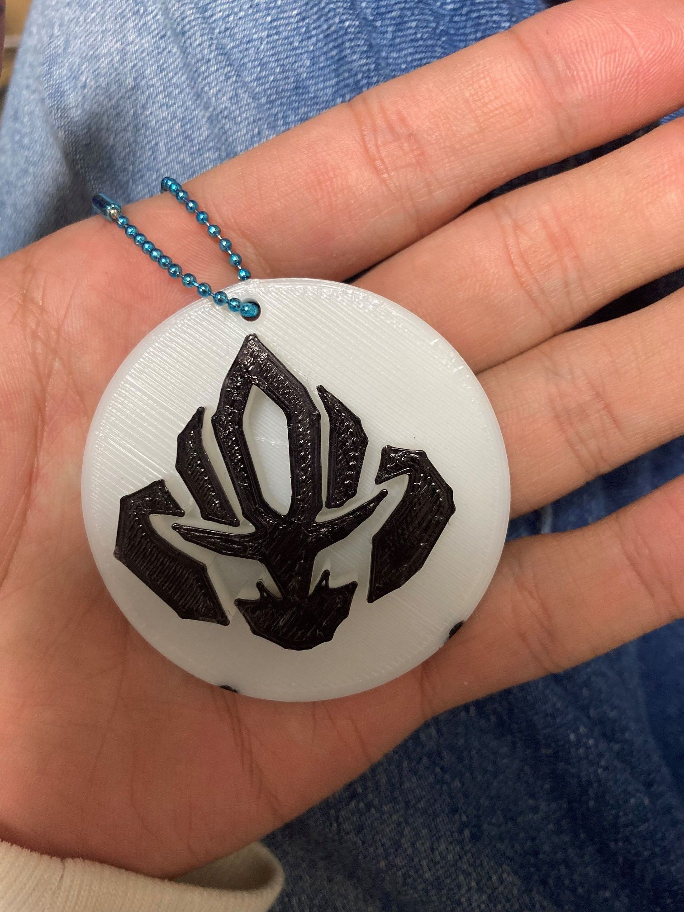
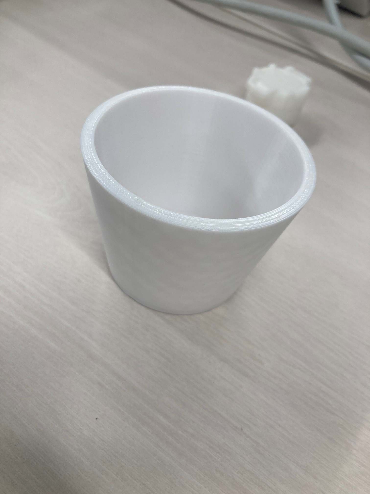
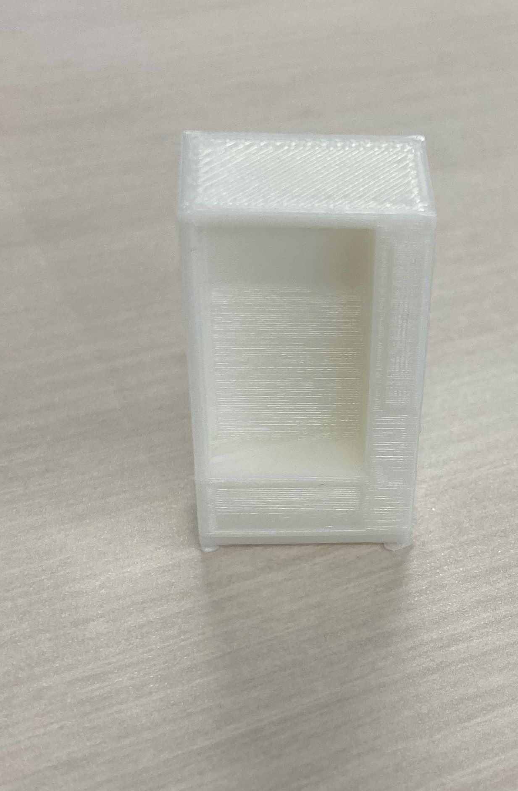

モンスターボール
皆様ご存じの”ポケモン”に登場するモンスターボールです。あっちの世界観だと200円です。
昔はよくボタン連打してたなぁ。懐かしい。初ポケモンは B W でした。タイトルが色で初代オマージュだったり出てくるポケモンがイッシュ地方オンリーだったり
ストーリーが重めだったり今となって他のシリーズと比べるとかなり異色ですね...
話はモンスターボールの話に戻るのですが通常の市販されているモンスターボールのほかにもボールの種類があるのはご存じですか？
ジョウトのガンテツボール（計7種類）やイッシュのドリームボール、そしてアローラのウルトラボールなどたくさんの種類があります。私はムーンボールが好きです。
いつかはすべてを並べたい。専用ページを作ります。ボール一覧
スイクンキーホルダー
ジョウト地方の伝説の３聖獣の一角、スイクンのキーホルダーです。ボールチェーンはDAISOで買いました。
この子は一番の推しです。初めて出した伝説のポケモンの色違いなので思い入れが深い。もふもふ。かわいいしかっこいい。最強。
ORASでだして現役で剣盾にいます。造形物自体はイラストを描いて、CADに取り込んで作成しました。
余談ではありますが、最新作「ポケットモンスタースカーレット・バイオレット」ではスイクン亜種ってわけじゃないけど亜種っぽいやつがいます。
コップ
Fusion360を使い始めのときに初めて作ったコップ。いい感じにできたと思う。ただ飲み物とか入れたりするのは衛生的にどうかと思ったので
底にきりで穴を開けて植木鉢として使ったり、ペンとかをいれたりして使っている。
もしいろいろ調べてみて大丈夫そうなら次はマグカップ型に挑戦してみたい
自販機
とある企画にて作成。作った理由は近所の自販であたったから。一番値段が高いやつを選んだ。
とくに書くことはないです。
webclassの課題を通知するプログラム
デザイン演習で言ってたやつです。完成しました。以下exeとソースコードです。
- import requests
- from bs4 import BeautifulSoup
- from plyer import notification
- import smtplib
- from email.mime.multipart import MIMEMultipart
- from email.mime.text import MIMEText
- import schedule
- import time
- # 関数を定義
- def d_confirm():
- #解析対象のURLを定義
- url= "https://kulms.kanagawa-u.ac.jp/webclass/"
- #URLの情報を取得
- res = requests.get(url)
- #
- soup = BeautifulSoup(res.text, "html.parser")
- #CSSセレクターで定義する asnはassignment=課題の略,course-contents-infoは締め切りの近い課題のやつ。
- asn = str(soup.select('course-contents-info'))
- #oasnが空の時をのぞいてoasnをテキストファイルとして保存
- try:
- with open('oasn.txt') as f:
- oasn = f.read()
- except:
- oasn = ''
- #もしasnとoasnが同じ時デスクトップに表示
- if asn ==oasn:
- notification.notify(
- title="Webclass",
- message="課題はありません",
- app_name="Webclass",
- timeout=10
- )
- #それ以外＝課題があるときに表示
- else:
- with open('oasn.txt','w') as f:
- f.write(asn)
- notification.notify(
- title="Webclass",
- message="締め切りの近い課題があります",
- app_name="Webclass",
- timeout=10
- )
- #サーバーに接続
- smtp_server = "smtp-mail.outlook.com"
- port = 587
- server = smtplib.SMTP(smtp_server, port)
- #暗号化の設定
- server.starttls()
- #サーバーにログイン
- login_address = "神大メール"
- login_password = "パスワード"
- server.login(login_address, login_password)
- #メールの作成
- message = MIMEMultipart()
- message["Subject"] = "締め切りの近い課題があります。"
- message["From"] = "神大メール"
- message["To"] = "神大メール"
- text = MIMEText("締め切りの近い課題があります。")
- message.attach(text)
- #メールの送信
- server.send_message(message)
- #サーバーの切断
- server.quit()
-
- #d_confirm関数を呼び出してデスクトップの表示とメールを送信（必要な時のみ）
- d_confirm()
- # 定期実行の間隔（秒数）
- interval = 110 * 60 # 110分 大学の授業時間+休み時間（110分 * 60秒）
- # 定期実行のスケジュールを設定
- def schedule_task():
- d_confirm() # 定期実行する関数を呼び出す
- # スケジュールを設定
- schedule.every(interval).seconds.do(schedule_task)
- while True:
- schedule.run_pending()
- time.sleep(1)